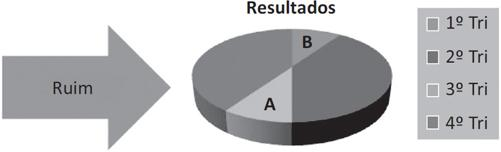

A escrita de uma monografia depende fundamentalmente da existência de algum conteúdo a ser apresentado. Os capítulos anteriores apresentaram caminhos para a busca desse conteúdo. Esse caminho se inicia na escolha de um problema, seguido pela revisão bibliográfica, escolha de um objetivo com uma hipótese justificada, definição de um procedimento metodológico e sua execução, para a coleta de resultados que serão posteriormente analisados e relatados na monografia.
Para quem lê pela primeira vez uma monografia, pode ficar a impressão de que o trabalho foi escrito sequencialmente da mesma maneira como se apresenta. Porém, normalmente esse não é o caso.
A ordem de apresentação usual dos capítulos de uma monografia é a seguinte:
Essa ordem, mencionada anteriormente, é aquela em que o trabalho será lido por alguém que esteja iniciando a pesquisa nessa área de conhecimento. Primeiramente, é necessário conhecer o resumo para saber de que se trata o trabalho. A introdução apresenta objetivos, limitações e procedimento metodológico do trabalho, além de situá-lo resumidamente no estado da arte. Será necessário ler a revisão bibliográfica para que se conheça algo sobre trabalhos similares, bem como os conceitos fundamentais para a compreensão do trabalho propriamente dito, que é apresentado no capítulo do desenvolvimento. Por fim, o leitor observará as conclusões e, se quiser aprender mais sobre o assunto, consultará as referências listadas ao final.
Dependendo do trabalho, a revisão bibliográfica e o desenvolvimento poderão ocupar mais de um capítulo cada. Por exemplo, poderá haver um capítulo de fundamentação teórica (conceitos fundamentais para compreensão do trabalho) e outro de estado da arte (comparação com trabalhos publicados recentemente com objetivos semelhantes), possivelmente como resultado de uma revisão ou mapeamento sistemático. Já o capítulo de desenvolvimento pode se dividir em design do experimento/modelo/protótipo/etc., aplicação e coleta de dados e discussão, por exemplo.
Deve-se presumir que a banca examinadora de uma monografia seja composta por especialistas no assunto do trabalho, os quais já conhecem suficientemente os principais conceitos e trabalhos correlatos. Esses especialistas possivelmente farão uma leitura em ordem distinta da apresentada na seção anterior, procurando obter inicialmente as informações mais relevantes sobre a contribuição do aluno, para em seguida analisar os aspectos mais triviais do trabalho. Os especialistas vão direto ao cerne da questão, deixando os complementos para avaliar em um segundo momento.
Isso varia muito, porém, haverá avaliadores que simplesmente farão uma leitura sequencial do trabalho, do início ao fim, anotando todas as inconsistências e lacunas à medida que vão evoluindo no texto. A forma como um avaliador lê uma monografia depende de sua personalidade e experiência. Porém, uma sequência de leitura muito interessante, sugerida por especialistas, poderia ser definida da seguinte forma:
O especialista inicialmente lê o resumo para saber de que se trata o trabalho. Ele verifica se o resumo é compatível com o título do trabalho. Ele espera que o resumo apresente o problema sendo tratado, uma justificativa para a hipótese escolhida e, principalmente, uma descrição rápida dos resultados obtidos ou contribuições. Se algum desses elementos não estiver no resumo, o avaliador provavelmente já colocará uma marca vermelha aqui.
Um trabalho cujo resumo não indique claramente a existência de contribuições relevantes possivelmente não será bem avaliado. Deve-se evitar, portanto, que o resumo apresente apenas informações do tipo “Este trabalho apresenta um estudo sobre...”, ou “Este trabalho propõe um método para...”.
É necessário que o resumo apresente alguma informação do tipo “O principal resultado obtido a partir deste trabalho é...”. Esse resultado, supõe-se, deve ser relevante, no sentido em que foi comentado anteriormente, ou seja, deve corresponder a algum conhecimento que não estava disponível antes da execução do trabalho e que foi descoberto durante a sua elaboração. Não será suficiente, por exemplo, escrever “O principal resultado obtido a partir deste trabalho foi o estudo de...”, pois, como foi dito, o estudo é um objetivo pessoal do aluno e não o objetivo propriamente dito do trabalho de pesquisa.
Na sequência, tendo o especialista compreendido o resumo e conhecido a real contribuição do trabalho, vai verificar se a alegada contribuição realmente foi obtida. Inicialmente, ele verificará as referências citadas pelo aluno para ver se os principais trabalhos da área estão ali. Verificará também a existência de artigos recentes em conferências e periódicos, bem como a relevância dessas mesmas conferências e periódicos.
É possível reprovar um aluno em função das referências citadas no trabalho? Nos níveis de mestrado e doutorado, sim. Por exemplo, considere uma monografia (caso real) sobre XML que apresente como referências 12 trabalhos, sendo três livros técnicos de XML e nove páginas na internet que consistem em manuais técnicos de XML. Nesse caso, não há evidência de trabalho científico, mas apenas de trabalho técnico. O aluno pode até ter feito uma implementação muito bonita de alguma coisa com XML, mas possivelmente não terá valor científico se não estiver fundamentado em trabalhos relatados em eventos ou periódicos.
Estando as referências adequadas, o avaliador observará o capítulo de introdução com atenção. Nesse capítulo ele entenderá com mais detalhe o problema sendo resolvido, a técnica usada para a resolução e a forma como os resultados foram validados. O avaliador estará especialmente atento aos objetivos do trabalho, incluindo os objetivos específicos, que ele procurará identificar claramente comentados, um por um, nas conclusões.
Ao ler as conclusões, um bom avaliador esquadrinhará o texto buscando um comentário conclusivo sobre cada um dos objetivos do trabalho, indicando evidências de que as descobertas do capítulo de desenvolvimento confirmam as hipóteses ou respondem às questões de pesquisa. A falta dessa ligação direta entre objetivos e conclusões certamente dará margem a críticas.
Após verificar as conclusões, o avaliador desviará sua atenção para o capítulo de desenvolvimento, a fim de verificar como o aluno chegou àquelas conclusões. As conclusões terão de ser todas consequências de avaliações feitas no capítulo de desenvolvimento. Não se admite, por exemplo, que um aluno conclua que seu sistema é fácil de usar se no desenvolvimento testou apenas a eficiência do sistema, sem checar a usabilidade. Concluir algo que não foi verificado ao longo do trabalho é denominado “conclusão forte”, sendo inaceitável em trabalhos científicos.
Tendo compreendido a real contribuição do aluno, o avaliador finalmente dará uma vista de olhos no capítulo da revisão bibliográfica para ver se os principais conceitos foram bem apresentados e se os trabalhos correlatos estão adequadamente descritos e comparados com o trabalho atual.
A forma de leitura descrita parece ir das pontas para o centro da monografia. O especialista concentra-se primeiro nos pontos críticos do trabalho para depois ler as partes menos sujeitas a problemas.
A ordem sugerida neste livro para escrever os diferentes capítulos de uma monografia difere das duas anteriores. Pode-se escrever a monografia exatamente na ordem em que os capítulos se apresentam. Mas essa abordagem tem alguns inconvenientes, como, por exemplo, produzir uma revisão bibliográfica desnecessariamente longa (por não saber quais conceitos realmente serão usados no texto, coloca-se tudo sobre o que se leu) e, por vezes, deixa o aluno cansado na hora de escrever o mais importante: as conclusões. Quantas pessoas não entregaram seu trabalho ao orientador dizendo “Está pronto! Só faltam as conclusões”? Porém, o mais importante em um trabalho científico são as conclusões. O resto é apenas um meio convincente para se chegar a elas. O Professor Doug Comer da Purdue University diz:1
The easiest way to build a dissertation is inside-out. Begin by writing the chapters that describe your research [...]. Collect terms as they arise and keep a definition for each. Define each technical term, even if you use it in a conventional manner.2
Recomenda-se que só se inicie a escrita do texto final depois de ter concluído pelo menos a maior parte da pesquisa em si. Nada impede a escrita de rascunhos, mas esses textos não precisam ainda ter a preocupação de formatação e organização de um texto finalizado.
Então, quando o aluno terminar a pesquisa e já tiver uma ideia muito clara do que fez e quais resultados obteve, vai transformar seus rascunhos em um texto acabado. Mas em que ordem ele deve abordar a escrita desse texto? Segue uma sugestão:
Recomenda-se iniciar pela introdução porque possivelmente é o rascunho que estará mais próximo da forma final nesse momento. O capítulo de introdução frequentemente é uma reescrita da proposta de monografia. Troca-se o tempo futuro pelo tempo presente, e a monografia passa a ter objetivo, justificativa, hipóteses etc., que eram os mesmos, muitas vezes, da proposta de pesquisa. Quando algum objetivo que existia no início não é obtido por alguma razão, o ideal é que seja removido dos objetivos da monografia, mantendo-se apenas aqueles que foram obtidos. Porém, pode ser interessante adicionar um comentário sobre isso no capítulo de conclusões, em que em “trabalhos futuros” pode-se informar sobre o objetivo que originalmente constava na lista, mas que não foi atingido durante o trabalho.
Em seguida, o desenvolvimento deve ser escrito porque a pesquisa, seja ela estudo de caso, observação, experimento, levantamento etc., ainda estará fresquinha para ser relatada. Esse é um capítulo importante e, por isso, deve ser escrito com muita atenção.
As conclusões devem ser escritas logo depois. Após terminar o relato do desenvolvimento, e já tendo o capítulo de introdução sido revisado com seus objetivos claramente colocados, a conclusão deverá ser uma consequência daquilo que foi relatado no desenvolvimento, bem como ter ligação com cada um dos objetivos, conforme já observado.
Somente depois escreve-se a revisão bibliográfica e listam-se as referências. Deve-se evitar colocar na revisão bibliográfica a totalidade das obras eventualmente lidas, pois isso não serve a um objetivo claro. Deve-se colocar, isso sim, as comparações com trabalhos correlacionados e os conceitos principais usados no capítulo de desenvolvimento. Um conceito que não é usado no capítulo de desenvolvimento, por mais interessante que seja, não precisa estar na fundamentação teórica. As referências vão mencionar apenas os trabalhos efetivamente citados. Por isso é importante que essas duas seções sejam verificadas em conjunto.
Finalmente, escreve-se o resumo, que, como o nome diz, resume o trabalho. Mais adiante será discutido o que deve ser dito nessa seção do trabalho.
O título do trabalho é o primeiro meio para chamar a atenção de um potencial leitor. Um título deve descrever a principal contribuição do trabalho de forma sintética. Alguns títulos, por serem muito genéricos, não motivam a leitura. Por exemplo, “um estudo sobre redes neurais”. Para que fosse um bom título, seria melhor dizer que tipo de resultado esse estudo produziu. Outro exemplo de um título não motivador é “XYZ: uma nova técnica de modelagem de dados”. Novamente, seria mais interessante se o título pudesse esclarecer que tipo de vantagem essa nova técnica teria em relação a outras. Apenas o fato de ser nova não garante que seja interessante.
Seguem alguns exemplos de bons títulos obtidos da Biblioteca Digital da Sociedade Brasileira de Computação (SBC) há alguns anos:
O título deve apresentar, então, claramente, a ideia ou contribuição central do trabalho. Porém, o título não pode ser muito longo. A apresentação mais detalhada da ideia ou contribuição central será feita no resumo do trabalho, que normalmente aparece logo após o título.
O resumo de uma monografia não é, como alguns parecem pensar, um trailer de um filme, em que se começa a contar uma história, mas não se conta o final. O resumo de um trabalho científico deve dar o máximo de spoiler possível, ou seja, deve contar o final da história. O leitor vai querer saber, em primeiro lugar, qual foi o resultado científico a que esse trabalho chegou. Se ele achar o resultado interessante no resumo, vai querer ler o resto para ver como o autor chegou a tal resultado.
Centenas de monografias em Computação são defendidas a cada ano apenas no Brasil. Se contarmos outros países, ainda teremos uma grande e crescente quantidade de material científico disponível. Esperar que alguém leia uma monografia cujo resumo diz “Este trabalho apresenta um estudo sobre bancos de dados” é esperar demais. Afinal, essa frase diz muito pouco. O que efetivamente esse “estudo” poderia ter gerado em termos de informação nova que possa interessar a alguém que trabalhe com bancos de dados? Por que um profissional ou pesquisador vai investir o tempo dele em ler este trabalho, sendo que milhares de outros possivelmente também poderiam ser interessantes?
Seria muito mais informativo um resumo que dissesse algo do tipo: “Este trabalho demonstra que as formas normais de bancos de dados existentes não são suficientes para evitar um problema de inconsistência dos dados identificado aqui como....” Se o leitor está acostumado a trabalhar com as formas normais e acha que elas explicam como deve ser um bom banco de dados relacional, ele ficará curioso para ver que caso estranho é esse que não é coberto pelas formas conhecidas. Ao longo do texto, mais detalhes serão dados, mas a atenção do leitor já foi conquistada.
Portanto, o resumo da monografia é efetivamente o lugar para se vender o peixe. Se o autor não conseguir deixar um leitor interessado no resumo, dificilmente conseguirá fazer com que ele leia sua monografia ao invés de outras. Além disso, sistemas de indexação em bases de dados de abstracts também não vão identificar o trabalho adequadamente.
Alguém poderia argumentar que o resumo, usualmente com menos de uma página, é um espaço muito pequeno para apresentar uma grande contribuição obtida em mais de dois anos de trabalho. Mas o problema é o seguinte: se o autor não consegue explicar a contribuição de seu trabalho em uma página (resumo), deve haver algo muito errado no seu trabalho ou na sua capacidade de ser sucinto.
Uma coisa que não se faz no resumo é revisão bibliográfica. A não ser que seja vital para a compreensão do trabalho, não se devem fazer citações bibliográficas no resumo. Não é razoável perder valiosas linhas citando trabalhos de outras pessoas. Esse espaço é reservado para o autor da monografia dizer a que veio e o que trouxe.
O resumo deve conter uma explicação bem clara sobre o real problema abordado no trabalho, pois pessoas com problemas semelhantes poderão se interessar. Além disso, um esboço da solução usada deve ser também apresentado, pois pessoas que usem tecnologias parecidas poderão também se interessar em ver uma possível nova classe de problemas sendo resolvida por essa tecnologia.
Segundo o Professor Spencer Rugaber (1995), da Georgia Tech, o propósito de uma monografia é a apresentação de uma tese.5
Então, faz sentido apresentar essa tese o mais cedo possível, ou seja, no resumo. A tese é definida como sendo uma afirmação que se procura comprovar verdadeira. Se um trabalho em nível de mestrado ou doutorado não puder ser definido a partir de uma tese que possa ser expressa em uma frase, possivelmente algo está errado na concepção do trabalho.
O capítulo de introdução apresentará de forma mais detalhada o tema e o problema de pesquisa. Em relação ao tema, espera-se uma descrição geral da área e da abrangência do estudo. Devem-se evitar, porém, introduções muito longas, por exemplo, iniciando na pré-história, para chegar a explicar que o tema do trabalho é relativo a redes de computadores.
A introdução deve conter os elementos que já foram mencionados no projeto de pesquisa, ou seja, os objetivos gerais e específicos, resultados esperados, limitações do trabalho, procedimentos metodológicos utilizados e justificativa. Em geral, o capítulo de introdução é fechado por uma descrição sucinta dos demais capítulos do trabalho. Já no caso dos procedimentos metodológicos, se a descrição destes for relativamente longa em relação aos outros itens, poderá ser apresentada em um capítulo à parte, usualmente entre a introdução e a revisão bibliográfica.
A revisão bibliográfica pode ser entendida como dividida em duas grandes partes:
A fundamentação teórica deve conter os conceitos obtidos na literatura e mencionados no desenvolvimento e conclusões. Já os trabalhos correlatos serão descrições do estado da arte, ou seja, trabalhos que publicaram tentativas de resolver o mesmo problema do trabalho atual. Essa segunda parte da revisão bibliográfica pode ser obtida a partir de uma revisão sistemática da literatura.
Assim, se um trabalho é sobre a aplicação de um modelo de rede neural para fazer compactação de textos, a fundamentação teórica deveria explicar o que são redes neurais, aprofundando detalhes sobre o modelo usado no trabalho, e explicar o que é compressão de textos. Já a seção de trabalhos correlatos poderia ser uma revisão sistemática sobre trabalhos que mencionam técnicas de compressão de textos e seus resultados, de forma que possam ser comparados aos do trabalho corrente.
Na fundamentação teórica é importante ser objetivo na apresentação, pois a quantidade de textos a serem consultados na maioria das áreas é muito grande. Não se recomenda fazer tratados ou extensas digressões sobre trabalhos que não sejam diretamente relacionados com o tema da monografia. Por exemplo, se o trabalho trata da comparação entre técnicas de mutação em algoritmos genéticos, não é necessário abordar literatura sobre robótica ou redes neurais, que, embora sejam tópicos diretamente ligados à Inteligência Artificial, são colaterais ao tema do trabalho.
A fundamentação teórica deve, isso sim, abordar os principais conceitos da área de pesquisa para que possa servir de referência a eventuais leitores que não sejam exatamente especialistas no assunto.
Quando for necessário mencionar conceitos definidos em mais de uma fonte bibliográfica, sugere-se que a forma de organização seja agrupar a informação por conceito e não por autor. Por exemplo, se os autores A, B e C apresentam os conceitos 1, 2 e 3, em vez de citar os conceitos 1, 2 e 3 de acordo com A, seguido dos conceitos 1, 2 e 3 de acordo com B e, finalmente, 1, 2 e 3 de acordo com C, sugere-se que seja citado o conceito 1, de acordo com A, B e C, se possível com alguma comparação ou conclusão feita pelo próprio autor; posteriormente, citam-se as definições para o conceito 2, de acordo com A, B e C, e finalmente o conceito 3, de acordo com A, B e C.
Já a seção de trabalhos correlatos deve descrever pesquisas de cada autor individualmente e incluir uma comparação com o trabalho atual, indicando em que ele é melhor (se quantitativo) ou pelo menos diferente (se qualitativo).
A comparação do trabalho atual com trabalhos correlatos pode ser feita em dois momentos: na revisão bibliográfica e/ou nas considerações finais. No final do capítulo de revisão bibliográfica pode ser comparada a hipótese de pesquisa com as hipóteses de pesquisa correlatas. Ainda não se têm dados efetivos do trabalho porque esses dados vão aparecer apenas no capítulo de desenvolvimento, mas já é possível discutir sobre vantagens e desvantagens das diferentes hipóteses de pesquisa de cada um dos trabalhos ou adiantar resultados que serão apresentados em detalhes depois.
O segundo momento em que a comparação pode ser feita é no final do documento, em geral no final do capítulo de desenvolvimento ou no capítulo de conclusão ou considerações finais. Nesse ponto já se têm os resultados do trabalho em questão, os quais podem ser comparados com os resultados de outros trabalhos correlatos. Trata-se, portanto, nesse caso, de uma comparação bem mais objetiva e detalhada.
Rugaber (1995) afirma que a seção de revisão bibliográfica em geral é maçante e mal-usada. Isso acontece porque o aluno, ao escrever, perde a oportunidade de usar o trabalho de outros autores para motivar o seu próprio estudo. Em vez disso, muitas vezes perde-se tempo e espaço fazendo um inventário estafante e desnecessário de tudo o que foi lido ou uma sequência de citações de outros autores que não leva a lugar nenhum.
Ainda segundo Rugaber, uma boa seção de revisão bibliográfica inclui uma ontologia e uma ontogenia. A ontologia vai apresentar os principais conceitos utilizados no trabalho. Já a ontogenia mostra como as diferentes ideias evoluíram com o passar do tempo até chegar ao estado da arte. O final da ontogenia naturalmente vai incluir o trabalho sendo desenvolvido, mostrando como ele se encaixa na evolução da área.
O capítulo de desenvolvimento marca o início da contribuição pessoal do autor do trabalho. Portanto, não se deve fazer do capítulo de desenvolvimento uma nova revisão bibliográfica. De preferência, todos os conceitos que serão necessários nesse capítulo já devem ter sido citados no capítulo de revisão bibliográfica. Se alguma comparação for feita com trabalhos correlatos nesse capítulo, apenas a comparação objetiva deve ser feita aqui, sendo que a apresentação pura e simples dos trabalhos correlatos já terá ocorrido no capítulo anterior.
O capítulo de desenvolvimento deve apresentar a construção da teoria, experimentos, modelo ou proposta, seja de que natureza for. Conceitos criados pelo autor da monografia devem ser descritos aqui e não na revisão bibliográfica. Na sequência, o autor deve trabalhar as evidências de que sua hipótese é verdadeira. Serão então apresentados dados, gráficos, testes, provas formais, estudos de casos, transcrição de entrevistas ou quaisquer outros meios julgados adequados para provar o seu ponto, ou seja, para mostrar que a hipótese é verdadeira.
Deve-se evitar transformar o capítulo de desenvolvimento em uma apresentação de um sistema computacional. Se um sistema foi desenvolvido, foi para servir a algum propósito de descobrir novo conhecimento. A monografia deve ser sobre o conhecimento gerado, não sobre o sistema em si. Apresentações detalhadas sobre telas de software, incluindo telas de login, menu principal etc., são enfadonhas e desnecessárias em um trabalho científico. O seguinte texto, do Professor John W. Chinneck, resume tudo:6
The purpose of your thesis is to clearly document an original contribution to knowledge. You may develop computer programs, prototypes, or other tools as a means of proving your points, but remember, the thesis is not about the tool, it is about the contribution to knowledge. Tools such as computer programs are fine and useful products, but you can’t get an advanced degree just for the tool. You must use the tool to demonstrate that you have made an original contribution to knowledge; e.g., through its use, or ideas it embodies.7
O capítulo das conclusões é, em geral, a pedra no sapato do estudante. Aparentemente tudo já foi dito sobre o trabalho no capítulo de desenvolvimento, então o que escrever nesse capítulo final?
A primeira dica é observar os objetivos geral e específicos do trabalho no capítulo de introdução e colocar no capítulo das conclusões um comentário sobre como o desenvolvimento apresentado ajudou a chegar a cada um desses objetivos, ou seja, como o trabalho de pesquisa permite concluir que cada um dos objetivos foi atingido.
Outro ponto importante é apresentar não apenas os pontos positivos do trabalho, mas também os negativos. Não se espera de nenhum trabalho científico que ele resolva todos os problemas do mundo. Pelo contrário, espera-se que o pesquisador seja suficientemente honesto para descrever de forma clara as fraquezas e riscos à validade de seu próprio trabalho. A seguinte máxima segue implacavelmente as leis da lógica: “Se você não for o maior crítico de seu próprio trabalho, outra pessoa será.”
Outro tópico a ser abordado no capítulo de conclusões são as lições aprendidas. O aluno passou dois anos ou mais estudando um tema e realizando experimentos com ele. Além dos objetivos do trabalho, claramente colocados e atingidos, ele deve ter aprendido muita coisa no processo. Talvez essa informação possa ser útil a outras pessoas. Então, deve-se descrever no capítulo de conclusões quais foram essas lições aprendidas ao longo do trabalho.
Podem-se descrever também outras situações nas quais se imagina que essas lições possam ser aplicadas. Por exemplo, ao comparar o resultado de questionários aplicados em uma empresa com a situação real observada in loco, um pesquisador percebeu que, por conta do medo de retaliações por parte da chefia, a maioria dos funcionários procurava apresentar nos questionários uma situação mais bonita do que realmente era. Dessa forma, o pesquisador aprendeu que, neste contexto, questionários não são fontes confiáveis de informação se não houver uma validação das respostas no ambiente de estudo. Essa lição aprendida poderia ser colocada no capítulo de conclusões.
O capítulo final de uma monografia deve ter pelo menos três partes: conclusão, contribuições e trabalhos futuros. Na conclusão, o aluno fará de forma concisa uma referência ao problema examinado e resolvido. Segundo John W. Chinneck, a conclusão propriamente dita terá o seguinte formato: “O problema descrito na seção x foi resolvido como demonstrado nas seções y a z, em que foi desenvolvido um algoritmo/método/abordagem etc. para tratar as situações mencionadas.”8
Ainda segundo Chinneck, o resumo das contribuições, que viria em seguida, deve ser organizado em ordem decrescente de sua importância, por exemplo:
As contribuições mais importantes do trabalho serão aquelas que geraram conhecimento novo. Ferramentas, protótipos e outros artefatos tecnológicos usualmente são contribuições secundárias.
Artigos publicados e relatórios de pesquisa não são contribuições, nesse sentido da palavra, mas relatos da pesquisa. Eventualmente, poderão ser citados aqui, ou apresentados como apêndices ao final do trabalho. Aproveitando a menção: apêndices são materiais produzidos pelo autor da monografia que são colocados no final para consulta para não prejudicar o fluxo de leitura do trabalho. Já anexos são materiais produzidos por outras fontes que são adicionados à monografia para consulta. Por exemplo, um aluno que esteja fazendo um trabalho sobre Informática e Direito poderá apresentar como anexos um conjunto de leis e jurisprudência relevante ao trabalho para consulta do leitor. Outro exemplo seria anexar tabelas consultadas em sistemas de informática alimentados por terceiros. Deve-se tomar cuidado, porém, para não anexar à monografia material protegido por direitos autorais. Para saber que materiais podem ser usados ou não no Brasil, pode-se consultar a Lei do Direito Autoral, ou Lei 9.610 de 19 de fevereiro de 1998.
Finalmente, os trabalhos futuros são a contribuição que o aluno deixa para que outros possam continuar sua pesquisa. Trabalhos futuros também devem tratar de futuras contribuições ao conhecimento com mais ênfase do que futuras contribuições às ferramentas, protótipos etc., que eventualmente possam ser desenvolvidas.
Espera-se sempre que uma monografia não seja apenas o final de uma pesquisa, mas também o início de uma caminhada. Assim, a seção final das conclusões normalmente é dedicada a deixar para os leitores ideias de oportunidades de pesquisa com as quais o autor se deparou ao longo do seu trabalho, mas que não teve tempo ou possibilidade de perseguir.
Nessa seção esperam-se dicas sobre trabalhos de pesquisa futura, e não trabalhos técnicos futuros. Por exemplo, o leitor terá pouco interesse em saber que o autor pretende futuramente implementar o sistema em Java, já que a versão atual está em C. Isso é apenas uma questão técnica. O leitor vai querer saber quais situações não foram testadas com a ferramenta atual e que poderiam ser relevantes para compreender o seu comportamento. Isso seria um trabalho futuro de pesquisa relevante.
Não é objetivo deste livro apresentar normas de citação bibliográfica, já que elas se encontram disponíveis em qualquer biblioteca que se preze. Como existem diferentes padrões de citação, sugere-se seguir as normas estabelecidas pelo curso, periódico ou evento no qual o trabalho será publicado. Elas variam. Como referência, pode-se consultar na internet o trabalho de Alves e Arruda, baseado na NBR 6023/2018.9
Apenas uma dica: após colocar todas as referências bibliográficas, deve-se verificar se cada uma delas é citada no texto e se todas as que são citadas no corpo do trabalho aparecem na lista de referências. Algumas ferramentas de editores de texto permitem ter esse controle automaticamente.
O texto científico deve comunicar uma ideia de pesquisa e seus resultados. Isso, claro, é uma questão semântica. Mas há uma série de pequenos vícios que muitos alunos têm e que, por serem tão comuns, são citados aqui para que possam ser evitados.
Esta seção não tem a intenção de ensinar a escrever português correto nem a formatar trabalhos monográficos ou artigos. O objetivo é apresentar e discutir erros frequentes, cometidos por alunos de Computação em seus trabalhos, que podem ser facilmente minimizados.
Em primeiro lugar, uma monografia deve evitar, sempre que possível, o uso de advérbios. Estranho, não? O advérbio é uma palavra que modifica um verbo e é muito comum na língua portuguesa. Porém, o uso do advérbio no texto científico frequentemente estraga uma frase que, sem ele, poderia ficar bem melhor. Embora o advérbio possa ser muito útil para enfatizar ideias, no texto científico o uso do advérbio deve ser minimizado, pois pode reforçar desnecessariamente certas afirmações. Por exemplo, dizer que “a experiência demonstra que as abordagens são equivalentes” é uma coisa, mas dizer “a experiência demonstra definitivamente que as abordagens são equivalentes” dá um ar de prepotência ao texto, o que não é necessário para a frase em questão. Pode-se notar que as duas frases têm o mesmo sentido, mas a primeira soa bem melhor do que a segunda.
Algo a ser evitado em um texto científico também são as brincadeiras, as piadas ou a ironia. Eventualmente, periódicos científicos até publicam textos com esse tipo de expediente, mas nesses casos em geral o autor é algum figurão da área. Quem não é o Papa não deveria se arriscar a usar esses recursos no texto científico. Seria como ir pela primeira vez na casa dos pais do(a) namorado(a) e resolver soltar todo seu repertório de piadas. Tem chance de dar certo?
Em um texto científico, não se espera que o autor utilize julgamento de valor sobre temas que não podem ser avaliados como ruins ou bons de forma maniqueísta. Dizer, por exemplo, que orientação a objetos é bom enquanto programação estruturada é ruim para o desenvolvimento de software é uma questão de opinião. Em vez de dizer que algo é bom, deve-se procurar salientar uma das qualidades que se julga boa. Em vez de dizer que algo é ruim, deve-se apresentar uma explicação baseada em fatos verificáveis sobre os defeitos que se julga serem um problema.
Nunca se deve dizer que alguma coisa é “perfeita” porque na natureza nada é.
Em vez de se escreverem expressões como “hoje em dia” e “atualmente”, fica melhor se for usado o ano corrente. Isso porque não se sabe, a priori, quando o texto será lido. Assim, em vez de escrever “atualmente”, pode-se escrever “em 2019”. Dessa forma, a frase ficará mais precisa e dará melhor embasamento científico a qualquer outra informação que seja apresentada em seguida.
Não se deveria, a princípio, expressar emoções no texto científico. Assim, evita-se usar expressões do tipo “ficamos surpresos ao perceber que...”. Não é da conta de ninguém se o pesquisador ficou surpreso. Deve-se apenas dizer o que foi percebido e, de preferência, mostrar como isso foi percebido de forma que também possa ser percebido por outras pessoas. Se o resultado foi inusitado, isso pode ser dito, mas precisa ser fundamentado.
Afirmações como “uma nova abordagem”, “uma técnica diferente” etc. devem ser evitadas. Qualquer abordagem que estiver sendo proposta será nova e diferente das outras; caso contrário, não seria tema de uma monografia. Não faria sentido propor algo que seja velho ou igual ao que já existe, não? Então, deve-se evitar qualificar o trabalho como novo e diferente, pois isso já é o que todos esperam. É melhor apenas dizer, afinal de contas, qual é o trabalho e em que ele é diferente ou melhor que os anteriores.
Usar palavras como “obviamente” ou “claramente” podem insultar o leitor, pois o autor diz estar falando algo que é óbvio. Se for óbvio, não precisa ser dito, se não é óbvio então não se deve dizer que é. Então, obviamente, deve-se evitar usar esse termo.10
Sempre que o texto usar a expressão “na verdade” pode dar a impressão de que aquilo que foi escrito antes era mentira. Então, na verdade, essa não é uma boa escolha.11
É usual, no texto dissertativo, que o autor não faça uma narrativa pessoal do tipo “eu vi”, “eu testei”, “eu descobri” etc. Em vez disso, em geral escreve-se “foi visto”, “foi testado”, “foi descoberto” etc. Mas esse é um costume mais observado no Brasil e alguns outros países. Textos publicados internacionalmente com maior frequência apresentam frases escritas na primeira pessoa do singular ou, quando são textos com vários autores, na primeira pessoa do plural.
Quando for usado um dos pronomes “todos”, “muitos”, “alguns” ou “nenhum”, deve-se ter certeza de que se tem uma evidência ou prova de que a afirmação efetivamente possa ser assim qualificada. Não se pode dizer em um texto científico, por exemplo, que “muitos estudantes têm problemas com a monografia”, sem que tenha havido um estudo, observação ou medição sobre isso. Outra possibilidade é usar uma citação. Dizer “segundo Fulano (2019), a maioria dos alunos tem problemas com a monografia” está correto, porque passa o problema de provar a afirmação para o autor do texto citado. No entanto, nesse caso, é preciso verificar ainda se a referência é um trabalho confiável e de boa qualidade.
Outras recomendações são usar a voz ativa em vez da passiva, escrever no tempo presente e colocar negações no início da frase. Essas recomendações de estilo ajudam a facilitar a compreensão do texto.
Assim, deve-se preferir “o estudo demonstra a validade da hipótese” (voz ativa) em vez de “a validade da hipótese foi demonstrada pelo estudo” (voz passiva). Alguns editores de texto já fazem disso uma sugestão-padrão de correção de estilo.
O tempo presente deve ser usado quando o autor se referir a partes do próprio texto. Assim, em vez de dizer “o Capítulo 2 mostrou...” e “o Capítulo 7 vai mostrar...”, deve-se dizer “o Capítulo 2 mostra...” e “o Capítulo 7 mostra...”. Isso vale também para referências bibliográficas. Porém, referências a eventos, como experimentos realizados, podem ser escritas no tempo pretérito, como, por exemplo, “o experimento 18 mostrou que...”. Referências a eventos como trabalhos futuros também podem ser feitas no tempo futuro, como, por exemplo, “Nos próximos anos, será desenvolvida uma nova abordagem...”.
Seria difícil ler uma frase longa na qual se vai afirmando uma série de coisas e no final se usa uma expressão para indicar que tudo o que estava sendo dito é falso. Se o objetivo é negar algo, então é preferível iniciar negando. Assim, ficará mais fácil compreender o texto. Em todo caso, sempre é preferível usar frases afirmativas quando possível. Em vez de dizer, “a confirmação do experimento realizado ao longo de três meses pelas equipes não aconteceu” (negação no final), é preferível dizer “não aconteceu a confirmação do experimento realizado ao longo de três meses pelas equipes”.
Outro exemplo de negação no final vem do livro O Guia do Mochileiro das Galáxias (Adams, 2004) com a frase “An expression of deep worry and concern failed to cross either of Zaphod’s faces”.12 É uma frase até irônica, pois o livro é no estilo humorístico, mas ilustra bem a estranheza que causa ler uma frase que vai afirmando coisas e no fim nega tudo.
Chinneck apresenta algumas dicas interessantes para o texto:
Poder-se-ia ainda adicionar mais uma sugestão: escrever as frases o mais curtas possível. Por exemplo, pode-se dizer “considera-se que as rosas apresentam a propriedade de serem vistas com coloração vermelha”. Mas também se pode dizer praticamente a mesma coisa com a frase “rosas são vermelhas”.
A Professora Mirella M. Moro da Universidade Federal de Minas Gerais (UFMG) apresenta os sete pecados capitais do texto científico:13
Além disso, Moro apresenta algumas dicas para a produção de textos de boa qualidade. Entre elas destacam-se:
Hexsel (2004) acrescenta mais algumas sugestões:

Figura 10.1 Gráfico que distorce a realidade: A e B são iguais, mas A parece maior.
Dado o costume de trabalhar com linguagens de programação, por vezes os alunos de computação também esquecem como usar apropriadamente os sinais de pontuação. Em um texto, nunca se coloca espaço antes de sinal de pontuação, mas sempre se coloca espaço após o sinal se houver uma palavra em seguida. Veja a seguir exemplos e contraexemplos.
No caso de parênteses, colchetes e chaves, nunca deve haver espaço na parte interna desses símbolos. Se do lado de fora houver uma palavra, usa-se espaço. Porém, se após fechar parêntese ou similar houver um sinal de pontuação, não se usa espaço. Exemplos a seguir:
Na dúvida, o aluno sempre deve procurar ler bastante e ver como os textos são formatados e não inventar formatações novas, nem seguir os padrões usuais de linguagens de programação, pois estes se aplicam a programas, não a textos.
Um último aspecto que consiste em erro muito comum nas monografias em Computação é o uso inadequado de letras maiúsculas no início de palavras. Em geral, há duas regras que devem ser observadas. Em primeiro lugar, títulos de capítulos ou seções do texto usualmente não levam sinal de pontuação no final, mas os substantivos, adjetivos e a maioria dos verbos devem iniciar em maiúscula. Seguem exemplos:
Alguns veículos também poderão exigir um estilo em que títulos do primeiro nível aparecem com TODAS AS LETRAS MAIÚSCULAS, em segundo nível apenas com As Iniciais das Palavras em Maiúscula e em terceiro nível apenas com A primeira letra do título em maiúscula. Deve-se ficar atento, assim, ao que o veículo de publicação ou universidade exige.
Um título somente terá pontuação final se for uma interrogação ou exclamação. Por exemplo:
Agora, em relação ao uso da letra maiúscula no texto em geral, usa-se apenas no início de frases (novo parágrafo ou após um ponto) ou no caso de nomes próprios. É errado usar letra maiúscula aleatoriamente, como muitos alunos fazem. Veja estes exemplos:
Essas são regras de estilo que, em geral, não afetam o conteúdo de um trabalho, mas ajudam a torná-lo mais agradável de ler. Mais regras podem ser encontradas no Acordo Ortográfico da Língua Portuguesa de 1990 em sua Base XIX.14
________________________
1 Disponível em: <https://www.cs.purdue.edu/homes/dec/essay.dissertation.html>. Consultado em: 20 de junho de 2019.
2 Tradução: A maneira mais fácil de construir uma dissertação é de dentro para fora. Comece escrevendo os capítulos que descrevem sua pesquisa [...]. Anote termos à medida que eles surgem e mantenha uma definição para cada um deles. Defina cada termo técnico, mesmo se você o usar da maneira convencional.
3 Tradução: Abordagens formais para garantir a segurança de software espacial.
4 Tradução: Simulador de cadeira de rodas elétrica para reabilitação de pessoas com deficiência motora.
5 Disponível em: <https://www.cc.gatech.edu/fac/Spencer.Rugaber/txt/thesis.html>. Acessado em: 20 de junho de 2019.
6 Disponível em: <http://www.sce.carleton.ca/faculty/chinneck/thesis.html>. Acessado em: 20 de junho de 2019.
7 Tradução: “O objetivo da sua tese é documentar de forma clara uma contribuição original ao conhecimento. Você pode desenvolver programas de computador, protótipos ou outras ferramentas como um meio de provar os seus pontos, mas lembre-se, a tese não é sobre a ferramenta, ela é sobre a contribuição ao conhecimento. Ferramentas tais como programas de computador são produtos legais e úteis, mas você não pode obter um grau acadêmico avançado apenas pela ferramenta. Você deve usar a ferramenta para demonstrar que você fez uma contribuição original ao conhecimento; por exemplo, através do seu uso ou das ideias que ela incorpora.”
8 Disponível em: <http://www.sce.carleton.ca/faculty/chinneck/thesis.html>. Acessado em: 21 de junho de 2019.
9 Disponível em: <http://portal.bu.ufsc.br/normalizacao/>. Acessado em: 16 de junho de 2019.
10 Sugere-se que o leitor releia a última frase ignorando a palavra em itálico. Mesma informação, sem o “obviamente”.
11 Sugere-se que o leitor novamente releia a frase sem a expressão em itálico. Ela não faz falta.
12 “Uma expressão de profunda preocupação e empatia não conseguiu cruzar nenhuma das faces de Zaphod.”
13 Disponível em: <https://homepages.dcc.ufmg.br/~mirella/doku.php?id=escrita>. Acesso em: 20 de junho de 2019.
14 Disponível em: <http://www.priberam.pt/docs/AcOrtog90.pdf>. Acesso em: 23 de julho de 2020.